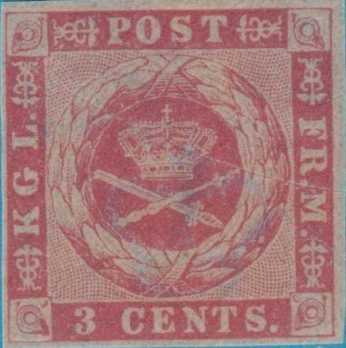
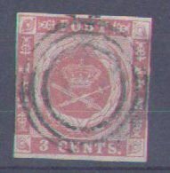
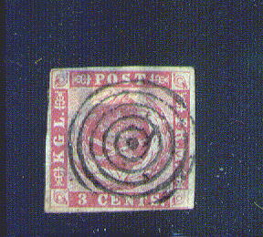
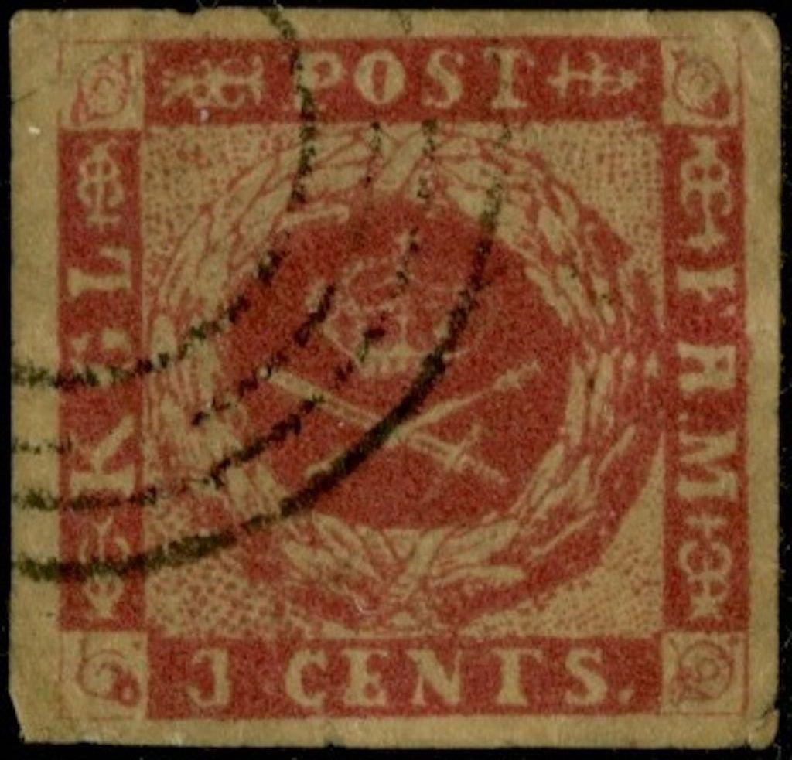
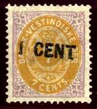
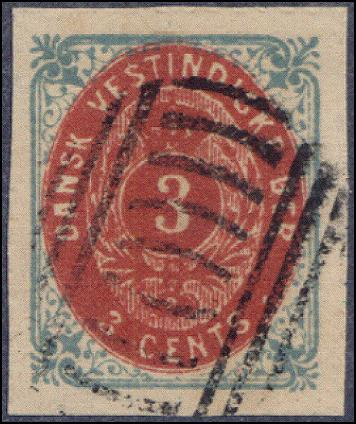
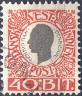
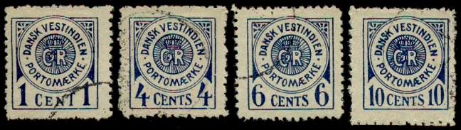
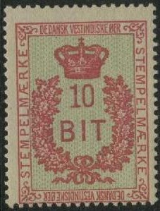

Antilles Danoises - Dansk Vestindien
Note: on my website many of the
pictures can not be seen! They are of course present in the
catalogue;
contact me if you want to purchase it.
In 1917 the United States bought Danish West Indies and was renamed as United States Virgin Islands..


3 c red (imperforate) 3 c red (perforated) 4 c blue (perforated)


These stamps have watermark 'Crown'.
Value of the stamps |
|||
vc = very common c = common * = not so common ** = uncommon |
*** = very uncommon R = rare RR = very rare RRR = extremely rare |
||
| Value | Unused | Used | Remarks |
| 3 c | R | R | Imperforate Exists on yellowish paper: RR Also rouletted: RRR |
| 3 c | R | R | Perforated 12 1/2 |
| 4 c | RR | RR | Perforated 12 1/2 |


Reprints were made for the book of G.A.Hagemann on Danish and Danish West Indies stamps (1930).
Forgeries exist, example:

Forgery with a dot in front of "CENTS" and the crown
and swords quite badly done. The dots behind "KGL" and
"FRM" are missing.

Other forgeries. The dots behind "KGL" and
"FRM" are missing. I've been told that this forgery was
made by Zechmeyer, but I cannot confirm if this information is
correct. Other sources say this might be a Spiro forgery. Also
note the very strange "S" in "CENTS".


Very blur forgery type. The dots behind "KGL" and
"FRM" are missing.


Reprints made in 1977 with "FOTONYTRYK KPK 90 AR"
(photographic reprint 90 year) probably made for the Kobenhavns
Philatelist Klub.
1 c green and red 3 c blue and red 4 c brown and blue 5 c green and grey 7 c lilac and yellow 10 c blue and brown 12 c lilac and green 14 c lilac and green 50 c violet
Exists on thick and thin paper (14 c only on thin paper). These stamps have watermark 'Crown' and perforation 14 x 13 1/2 or 12 1/2.
Value of the stamps |
|||
vc = very common c = common * = not so common ** = uncommon |
*** = very uncommon R = rare RR = very rare RRR = extremely rare |
||
| Value | Unused | Used | Remarks |
| 1 c | ** | ** | |
| 3 c | *** | * | |
| 4 c | *** | ** | In 1903 it was authorized to use this stamp bisected as a 2 c stamp |
| 5 c | *** | *** | |
| 7 c | *** | *** | |
| 10 c | *** | * | |
| 12 c | *** | *** | |
| 14 c | RRR | RRR | |
| 50 c | R | R | |
Surcharged

'1 CENT' on 7 c lilac and yellow
Value of the stamps |
|||
vc = very common c = common * = not so common ** = uncommon |
*** = very uncommon R = rare RR = very rare RRR = extremely rare |
||
| Value | Unused | Used | Remarks |
| 1 c on 7 c | R | R | |
'10 CENTS 1895' on 50 c violet
Value of the stamps |
|||
vc = very common c = common * = not so common ** = uncommon |
*** = very uncommon R = rare RR = very rare RRR = extremely rare |
||
| Value | Unused | Used | Remarks |
| 10 c on 50 c | *** | *** | |
'2 CENTS 1902' on 3 c blue and red '2 Cents 1902' on 3 c blue and red '8 CENTS 1902' on 10 c blue and brown '8 Cents 1902' on 10 c blue and brown
Value of the stamps |
|||
vc = very common c = common * = not so common ** = uncommon |
*** = very uncommon R = rare RR = very rare RRR = extremely rare |
||
| Value | Unused | Used | Remarks |
| '2 CENTS' on 3 c | *** | *** | |
| '2 Cents' on 3 c | *** | *** | |
| '8 CENTS' on 10 c | *** | *** | |
| '8 Cents' on 10 c | *** | *** | |
Surcharged in new currency (bit)
'5 BIT 1905' on 4 c brown and blue
Value of the stamps |
|||
vc = very common c = common * = not so common ** = uncommon |
*** = very uncommon R = rare RR = very rare RRR = extremely rare |
||
| Value | Unused | Used | Remarks |
| 5 b on 4 c | *** | *** | |

A pair of 5 c stamps with "ST.THOMAS" cancel and 3 c
with "CHRISTIANSTED" and "ST JAN" cancel
(nowadays St.John)
In 1903 the 4 c could be used bisected diagonally, to be used as a 2 c stamp:


Here with "ST.THOMAS" and "FREDERIKSTED"
cancels.
Postcards in the same design with value 2 c blue and 3 c red exist.

Postcard in the 3 c red design.
There exist forgeries of this serie, but they can be easily identified: there is no '-' between 'DANSK' and 'VESTINDISKE', they also differ in many other aspects (for example the cancel). So far I've seen the following values 1 c, 3 c, 4 c, 7 c and 14 c. The forged cancels are 6 lines (the middlest ones longer) or a New South Wales look-alike cancel. The real cancels can be seen above. Examples of these forgeries:
(Genuine left, forgery right)
 
(Forgeries)
More information on these forgeries can be found on the Forgeries idenfication site of Bill Claghorn:http://geocities.com/claghorn1p/. I have seen full sheets (5 x 5 stamps) of the 3 c and 14 c values of these forgeries. Most likely they were made by Spiro.


Dubious stamps with dubious tiny circle cancels
I presume the third cancel of this row of forged Fournier cancels
was used in Danish West Indies (it was listed in 'The Fournier
Album of Philatelic Forgeries' under St.Thomas and Prince).
I've seen 'reprints' which were made in 1990 by or for 'KPK'. If I'm well informed, they have 'FOTONYTRYK . KPK. 90' printed on the backside. I have no further information.
1 c green 2 c red (1903) 5 c blue 8 c brown (1903)
These stamps have watermark 'Crown' and perforation 13.
Value of the stamps |
|||
vc = very common c = common * = not so common ** = uncommon |
*** = very uncommon R = rare RR = very rare RRR = extremely rare |
||
| Value | Unused | Used | Remarks |
| 1 c | * | * | |
| 2 c | ** | * | |
| 5 c | *** | *** | |
| 8 c | *** | *** | |
Surcharged in new currency (bit)
'5 BIT 1905' on 5 c blue '5 BIT 1905' on 8 c brown
Value of the stamps |
|||
vc = very common c = common * = not so common ** = uncommon |
*** = very uncommon R = rare RR = very rare RRR = extremely rare |
||
| Value | Unused | Used | Remarks |
| 5 b on 5 c | *** | *** | |
| 5 b on 8 c | *** | *** | |
I have seen postal stationery in this design in the value 2 c red.

5 b green 10 b red 20 b green and blue 25 b blue 40 b red and grey 50 b yellow and grey
These stamps have watermark 'Crown' and perforation 12 1/2.
Value of the stamps |
|||
vc = very common c = common * = not so common ** = uncommon |
*** = very uncommon R = rare RR = very rare RRR = extremely rare |
||
| Value | Unused | Used | Remarks |
| 5 b | * | * | |
| 10 b | * | * | |
| 20 b | *** | ** | |
| 25 b | *** | ** | |
| 40 b | *** | ** | |
| 50 b | *** | *** | |
1 F green and blue 2 F red and brown 5 F yellow and brown
These stamps have watermark 'Crown' and perforation 12 1/2.
Value of the stamps |
|||
vc = very common c = common * = not so common ** = uncommon |
*** = very uncommon R = rare RR = very rare RRR = extremely rare |
||
| Value | Unused | Used | Remarks |
| 1 F | *** | *** | |
| 2 F | R | R | |
| 5 F | R | R | |
5 b green 10 b red 15 b lilac and brown 20 b green and blue 25 b blue (2 shades on one stamp) 30 b brown and black 40 b orange and grey 50 b yellow and brown
These stamps have watermark 'Crown' and perforation 12 1/2.
Value of the stamps |
|||
vc = very common c = common * = not so common ** = uncommon |
*** = very uncommon R = rare RR = very rare RRR = extremely rare |
||
| Value | Unused | Used | Remarks |
| 5 b | * | * | |
| 10 b | * | * | |
| 15 b | ** | ** | |
| 20 b | *** | *** | |
| 25 b | ** | ** | |
| 30 b | R | R | |
| 40 b | *** | *** | |
| 50 b | *** | *** | |

(Reduced sizes)
5 b green 10 b red 15 b lilac and brown 20 b green and blue 25 b blue (2 shades) 30 b brown and black 40 b orange and grey 50 b yellow and brown
These stamps have watermark 'Cross' and perforation 13 1/2 x 14 1/2.
Value of the stamps |
|||
vc = very common c = common * = not so common ** = uncommon |
*** = very uncommon R = rare RR = very rare RRR = extremely rare |
||
| Value | Unused | Used | Remarks |
| 5 b | * | * | |
| 10 b | * | R | |
| 15 b | * | R | |
| 20 b | ** | R | |
| 25 b | ** | *** | |
| 30 b | ** | R | |
| 40 b | ** | R | |
| 50 b | *** | R | |

1 c blue 4 c blue 5 c blue 10 c blue
These stamps have perforation 11 1/2.
Value of the stamps |
|||
vc = very common c = common * = not so common ** = uncommon |
*** = very uncommon R = rare RR = very rare RRR = extremely rare |
||
| Value | Unused | Used | Remarks |
| 1 c | ** | ** | |
| 4 c | *** | *** | Exists in 3 types |
| 5 c | *** | *** | |
| 10 c | *** | *** | |

Forgeries of these stamps exist. The forgeries have a different '9'. The '9' in the genuine stamps have the bottom of the '9' more curved. Forgeries have perforation 11. I presume the above stamps are forgeries.
5 b red and grey 20 b red and grey 30 b red and grey 50 b red and grey
These stamps have perforation 12 1/2. The value 50 b exists also with perforation 14 1/2. Imperforate stamps also seem to exist (I have never seen them).
Value of the stamps |
|||
vc = very common c = common * = not so common ** = uncommon |
*** = very uncommon R = rare RR = very rare RRR = extremely rare |
||
| Value | Unused | Used | Remarks |
| 5 b | ** | ** | |
| 20 b | ** | ** | |
| 30 b | ** | ** | |
| 50 b | *** | *** | |
ENVELOPES
2 c blue 3 c red
Inscription 'DEDANSK VESTINDISKE OER STEMPELMAERKE'

I have seen the values 10 b red and green and 50 b green. Similar stamps exist for the Virgin Islands (US), the crown has been replaced by the US eagle, the inscription now reads 'INTERNAL REVENUE OF THE US VIRGIN ISLANDS'.
Stamps with inscription "DANSK VESTINDIEN JULEN" are Christmas charity labels. They exist in various designs.
Stamps - Timbres-Poste - Briefmarken


{kind=link}
{kind=link}
{kind=link}
{kind=link}